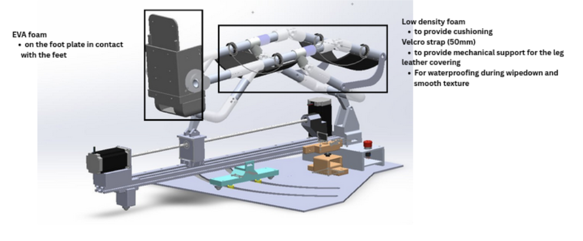
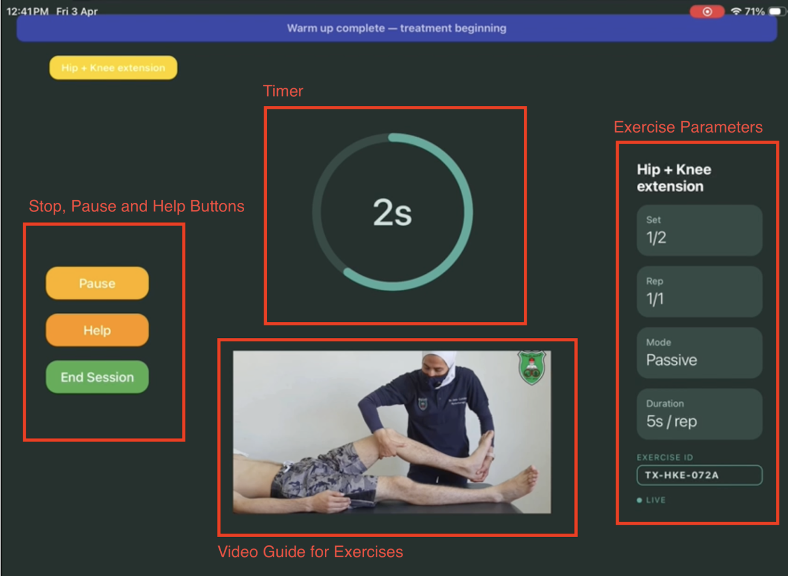
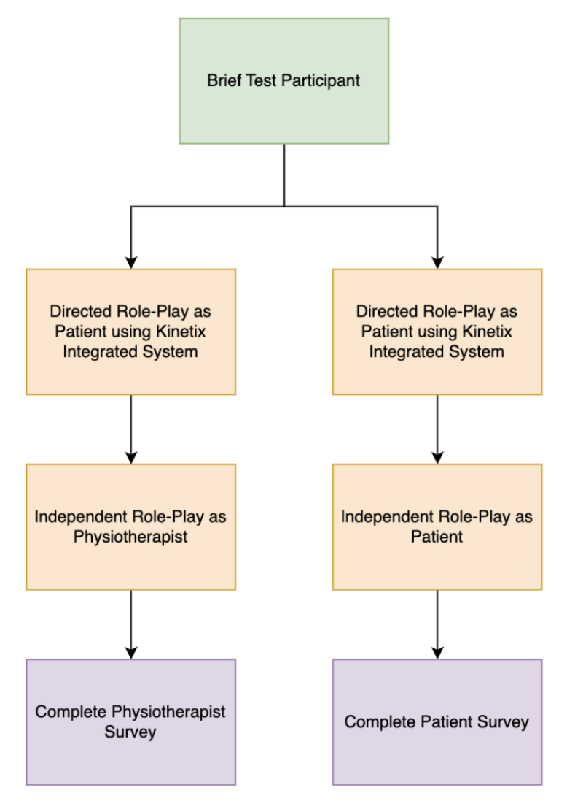
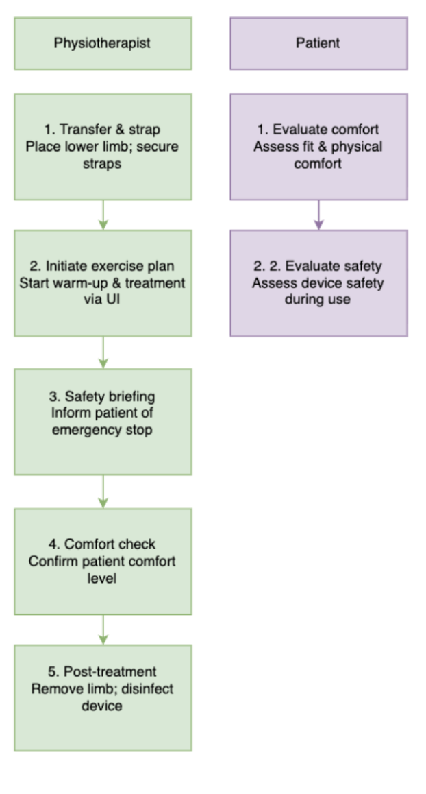
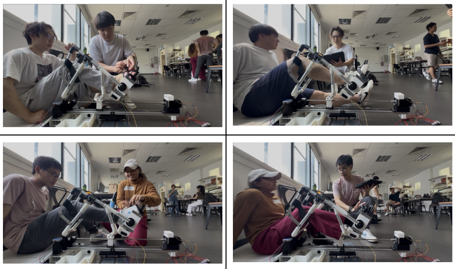
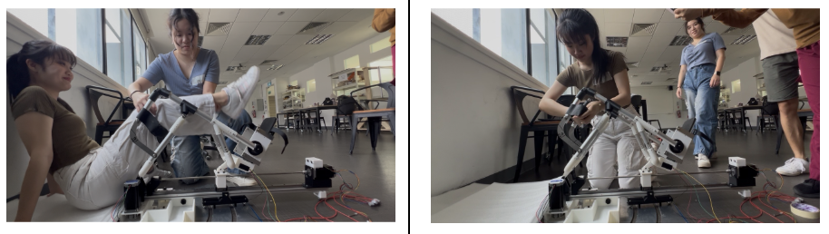
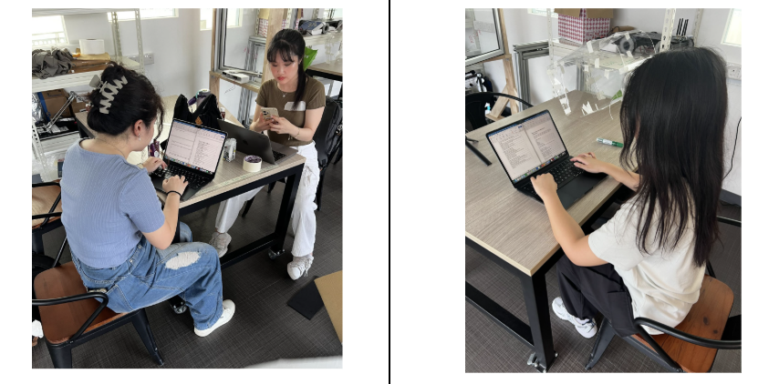
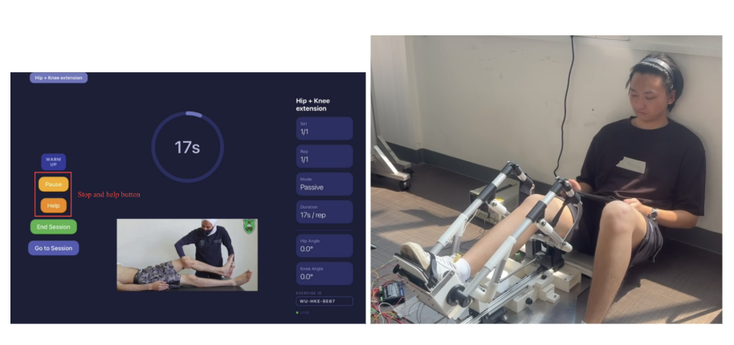

5.1 Integrated System Overview
The final integrated system consists of the physical Kinetix device and the UI. This was used to conduct the user tests in Section 5.3.

Figure 62. Integrated Kinetix system — physical device.

Figure 63. Integrated Kinetix system — UI on tablet.
5.2 Device Comfort
Device comfort is a critical aspect of usability, as it affects user compliance and safety during rehabilitation.
- Leg support — low-density foam reduces localised pressure; a 50 mm Velcro strap ensures secure stabilisation without excessive compression; leather covering provides a smooth, waterproof surface for improved comfort and ease of cleaning.
- Footplate — EVA foam added at the contact interface to enhance cushioning and distribute pressure more evenly across the plantar surface, reducing localised stress.
This design minimises pressure on the leg while providing adequate cushioning at the footplate to prevent discomfort or injury.

Figure 65. Footrest with foam cushion (left), leather support cushion (right).
5.3 User Protocol and Tests
A user protocol was developed to address the main purpose, use case, and setting with step-by-step guides on how to operate Kinetix. Both of which can be found in Appendix J.
5.3.1 User Test Process
To evaluate the usability, effectiveness, and comfort of Kinetix, user tests were conducted on ten volunteers categorised as either physiotherapist or patient to role-play and perform the critical tasks associated with the function and purpose of Kinetix. All participants were briefed through a guided demonstration.

Figure 65. User test process overview.
5.3.2 User Test Demographic
Table 31. Participant demographic.
Kinetix users are categorised into two groups — Physiotherapists and Patients — with respective tasks assigned to each role.

Figure 66. Task breakdown by user role — physiotherapist and patient.
The tables below describe the test procedures and show examples of testees role-playing as physiotherapist and patient with a role swap.

Table 32. Physiotherapist role-play test procedure.

Table 33. Patient role-play test procedure.
The table below shows task completion results from user testing:
| Task | Success Rate (%) | Observations |
|---|---|---|
| Device Setup (e.g. moving the patient's lower limb onto the device) | 100% | All testees able to complete the task |
| UI Navigation (e.g. Treatment Start) | 100% | All testees able to send the treatment plan to initiate the exercise |
| Session Completion (e.g. Wipe-down) | 100% | All testees able to remove the patient's leg easily and wipe-down the device |
Table 34. User task completion results.
5.3.3 Comfort and Usability Evaluation Test
Following each test session, participants completed two survey forms: one from the perspective of a physiotherapist and another from that of a patient. The surveys utilised a Likert scale for quantitative ratings across sections, alongside open-ended questions for qualitative feedback.
The survey was developed as a hybrid, source-traceable instrument. Individual items were adapted from validated tools, including the System Usability Scale (SUS), QUEST 2.0 (Demers et al., 2002), and NASA-TLX, while the overall structure and risk-based approach were guided by ISO 62366-1 usability engineering principles (International Organization for Standardization, 2015). Additional items were informed by recent lower-limb rehabilitation and exoskeleton studies to ensure relevance to both patient and physiotherapist contexts. The full survey is provided in Appendix D.
As participants were not rehabilitation professionals, the physiotherapist-focused survey was modified to exclude technical items related to treatment effectiveness. The revised versions are included in Appendices E–F.

Table 35. Images of testees filling up survey.
| Category | Patients (Avg. 1–5) | Physiotherapist (Avg. 1–5) |
|---|---|---|
| A: Usability | 4.4 | 4.6 |
| B: Setup | 4.4 | 4.4 |
| C: Comfort | 4.3 | 4.3 |
| D: Exercise | 4.4 | 4.7 |
| E: Safety | 4.3 | 4.4 |
| F: Design | 4.4 | 4.4 |
| G: Workload | 4.8 | 4.6 |
Table 36. UT2 Comfort and Usability Evaluation Test results.
5.3.4 Safety and Emergency Response Test

Figure 67. Testee trying the stop button on the UI.
5.3.5 System Integration Test
The system integration test was conducted in conjunction with the user test. System integration was considered successful as users were able to interact with the UI without assistance, the BLE connection was stable throughout the session, and the system did not experience any interruptions.